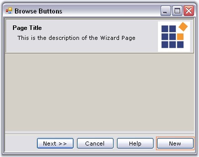
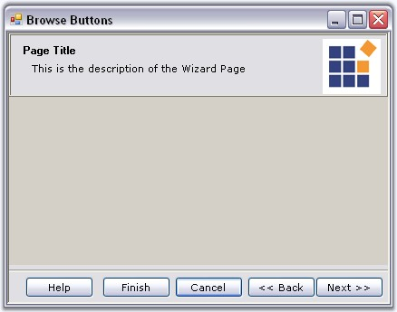
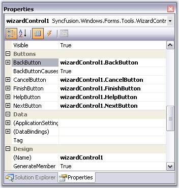

The default buttons which are available for the Wizard control are Back, Next, Cancel and Help. The Next and the Back buttons facilitates users to navigate between wizard pages.
 Note: You can navigate between the pages at
Design Time also. See Page
Navigation at Design time
topic for more details.
Note: You can navigate between the pages at
Design Time also. See Page
Navigation at Design time
topic for more details.
Button Visibility
By default, all the buttons are visible for all the Wizard pages. To change their visibility, use the below properties in individual pages.
|
Wizard Page Property |
Description |
|
BackVisible |
Specifies whether to display the 'Back' button. |
|
CancelVisible |
Specifies whether to display 'Cancel' the button. |
|
FinishVisible |
Specifies whether to display the 'Finish' button. |
|
HelpVisible |
Specifies whether to display the 'Help' button. |
|
NextVisible |
Specifies whether to display the 'Next' button. |
Note: When you use more than one
wizard page, you may set the BackVisible property of the first page to true to
hide the back button.
|
[C#]
this.wizardControlPage1.BackVisible = true; this.wizardControlPage1.NextVisible = true; this.wizardControlPage1.CancelVisible = true; this.wizardControlPage1.HelpVisible = true; this.wizardControlPage1.FinishVisible = true; |
|
[VB.NET]
Me.wizardControlPage1.BackVisible = True Me.wizardControlPage1.NextVisible = true Me.wizardControlPage1.CancelVisible = True Me.wizardControlPage1.HelpVisible = true Me.wizardControlPage1.FinishVisible = True |
You can enable or disable the buttons using the respective button enabled properties.
|
WizardControlPage Property |
Description |
|
BackEnabled |
Specifies whether the state of 'Back' button should be enabled or disabled. |
|
CancelEnabled |
Specifies whether the state of 'Cancel' button should be enabled or disabled. |
|
FinishEnabled |
Specifies whether the state of 'Finish' button should be enabled or disabled. |
|
HelpEnabled |
Specifies whether the state of 'Help' button should be enabled or disabled. |
|
NextEnabled |
Specifies whether the state of 'Next' button should be enabled or disabled. |
Adding Finish Button
In order to display the 'Finish' button in the last wizard page, user should set CancelOverFinish property in the WizardControlPage Collection Editor to false. This property determines if the Cancel button is positioned over the Finish button. If this property is set to true, it will override the FinishVisible property.
|
[C#]
this.finishPage.CancelOverFinish = false; |
|
[VB.NET]
Me.finishPage.CancelOverFinish = False |
A sample which includes button settings is available in the below sample installation location.
..\My Documents\Syncfusion\EssentialStudio\Version Number\Windows\Tools.Windows\Samples\2.0\Wizard Package\WizardControl_Tutorial
See Also
How to set spacing between the browsing buttons?,
Adding new Button to a Page
The following code snippet shows how to add a button to the wizard control browse buttons.
|
[C#]
// To add a new button Button btn = new Button(); btn.Text = "New Button"; // Add button to the WizardControl this.wizardControl1.Controls.Add(btn); // Set the constraints for the newly created Button this.wizardControl1.GridBagLayout.GetConstraintsRef(btn).GridPosX = 6; this.wizardControl1.GridBagLayout.GetConstraintsRef(btn).GridPosY = 5; |
|
[VB.NET]
' To add a new button Private btn As Button = New Button() Private btn.Text = "New Button" 'Add button to the WizardControl Me.wizardControl1.Controls.Add(btn) ' Set the constraints for the newly created Button Me.wizardControl1.GridBagLayout.GetConstraintsRef(btn).GridPosX = 6 Me.wizardControl1.GridBagLayout.GetConstraintsRef(btn).GridPosY = 5 |

Figure 1222: Button "New" added to the Wizard Control
Reordering the Button Sequence
In order to change the position of the buttons, user should handle the GridPosX property and change the position programmatically.
Note: Wizard control automatically sets
position for some buttons after page change. Setting the position for controls
manually, is not supported in those cases.
|
[C#]
//Setting the GridPosX property for changing the position of buttons this.wizardControl1.GridBagLayout.GetConstraintsRef(this.wizardControl1.BackButton).GridPosX = 5; this.wizardControl1.GridBagLayout.GetConstraintsRef(this.wizardControl1.NextButton).GridPosX = 6; this.wizardControl1.GridBagLayout.GetConstraintsRef(this.wizardControl1.CancelButton).GridPosX = 4; this.wizardControl1.GridBagLayout.GetConstraintsRef(this.wizardControl1.FinishButton).GridPosX = 3; this.wizardControl1.GridBagLayout.GetConstraintsRef(this.wizardControl1.HelpButton).GridPosX = 2; |
|
[VB.NET]
'Setting the GridPosX property for changing the position of buttons Me.wizardControl1.GridBagLayout.GetConstraintsRef(Me.wizardControl1.BackButton).GridPosX = 5 Me.wizardControl1.GridBagLayout.GetConstraintsRef(Me.wizardControl1.NextButton).GridPosX = 6 Me.wizardControl1.GridBagLayout.GetConstraintsRef(Me.wizardControl1.CancelButton).GridPosX = 4 Me.wizardControl1.GridBagLayout.GetConstraintsRef(Me.wizardControl1.FinishButton).GridPosX= 3 Me.wizardControl1.GridBagLayout.GetConstraintsRef(Me.wizardControl1.HelpButton).GridPosX = 2 |

Figure 1223: Browse Buttons Arranged according to GridPosX Property
The default browse buttons are the normal windows button controls. Appearance of the buttons can be controlled using the properties available. Some appearance properties are listed below.
|
Button Property |
Description |
|
FlatStyle |
Sets the appearance of the button control. The flat style are,
· Flat, · Popup, · Standard and · System. |
|
FlatAppearance |
Sets the appearance of the border, color for mouse state and check state. This setting will be effective only when FlatStyle is set to Flat. |
|
Font |
Sets the Font Style for the button text. |
|
ForeColor |
Sets the fore color for the button text. |
|
Image |
Sets an image icon for the button. |
|
ImageAlign |
Specifies the image alignment in the control. |
|
ImageIndex |
Specifies the image index for the button, when ImageList property is used. |
|
ImageList |
Specifies the image list. |
|
Text |
Specifies the button text. |
|
TextAlign |
Specifies the alignment of the text. |
|
TextImageRelation |
Specifies the relative location of the image to the text on the button. |
|
[C#]
//Sets the flat style settings for the Cancel button this.wizardControl1.CancelButton.FlatStyle = System.Windows.Forms.FlatStyle.Flat; this.wizardControl1.CancelButton.ForeColor = System.Drawing.Color.SteelBlue; this.wizardControl1.CancelButton.FlatAppearance.BorderSize = 1; this.wizardControl1.CancelButton.FlatAppearance.BorderColor = System.Drawing.Color.DarkBlue; this.wizardControl1.CancelButton.FlatAppearance.MouseOverBackColor = System.Drawing.Color.PowderBlue; |
|
[VB.NET]
'Sets the flat style settings for the Cancel button Me.wizardControl1.CancelButton.FlatStyle = System.Windows.Forms.FlatStyle.Flat Me.wizardControl1.CancelButton.ForeColor = System.Drawing.Color.SteelBlue this.wizardControl1.CancelButton.FlatAppearance.BorderSize = 1; this.wizardControl1.CancelButton.FlatAppearance.BorderColor = System.Drawing.Color.DarkBlue; this.wizardControl1.CancelButton.FlatAppearance.MouseOverBackColor = System.Drawing.Color.PowderBlue; |
Figure 1224: ForeColor = "SteelBlue"; FlatStyle = "Flat"; BorderSize = "1";
BoderColor = "DarkBlue"; MouseOverBackColor = "PowderBlue"
Note: You can access the properties of
CancelButton, FinishButton, HelpButton and NextButton using
WizardControl.CancelButton, WizardControl.FinishButton, WizardControl.HelpButton
and WizardControl.NextButton properties respectively.

Figure 1225: BackButton, CancelButton, Finishbutton, HelpButton, NextButton Properties